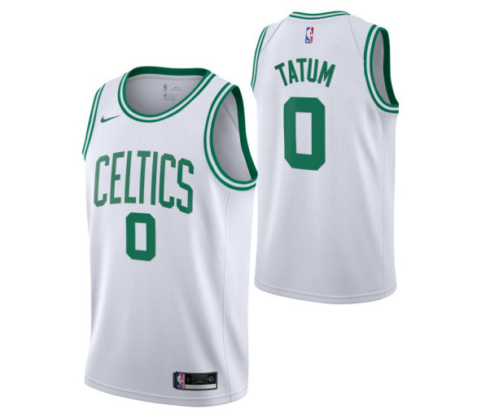
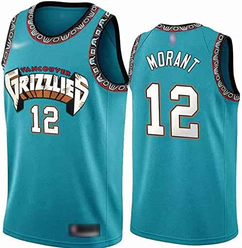
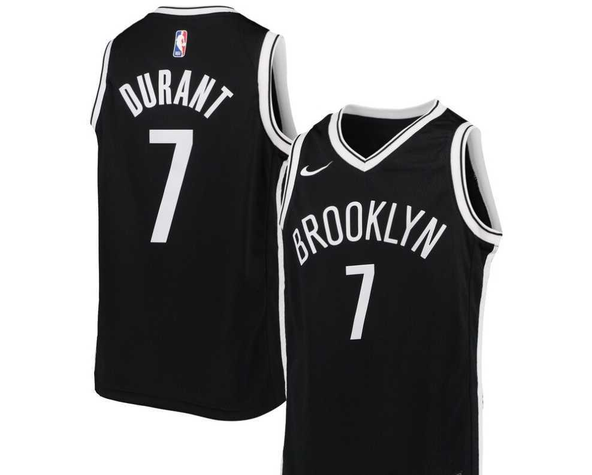

La National Basketball Association est la principale ligue de basket-ball au monde. Créée le 6 juin 1946 sous le nom de BAA, la ligue est renommée NBA en 1949 après sa fusion avec la NBL. Elle est l'une des quatre ligues professionnelles majeures du sport américain, aux côtés de la NFL, de la MLB et de la NHL.
Le meilleur club de la conférence Est de la NBA. Les Celtics de Boston est une franchise de basket-ball de la NBA basée à Boston dans l'État du Massachusetts aux États-Unis. Fondé le 6 juin 1946, le club évolue trois saisons dans la Basketball Association of America qui devient en 1949 la National Basketball Association
Les Grizzlies de Memphis sont une franchise de basket-ball de la National Basketball Association, basée dans la ville de Memphis, dans l'État du Tennessee. Les Grizzlies concourent en tant que membre de la conférence Ouest au sein de la division Sud-Ouest de la ligue. Les Grizzlies jouent à domicile au FedExForum.
Les Nets de Brooklyn sont une franchise de basket-ball de la National Basketball Association. L'équipe est basée dans l'arrondissement de Brooklyn à New York. Les Nets concourent au sein de la NBA en tant que membre de la Division Atlantique de la Conférence Est. L’équipe joue ses matchs à domicile au Barclays Center.
